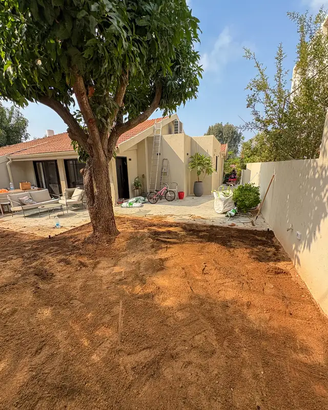
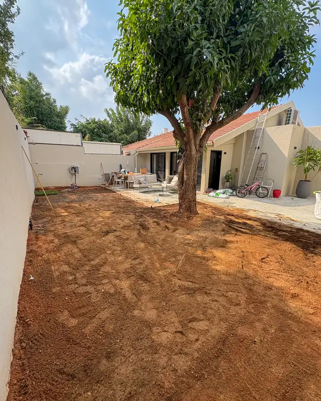
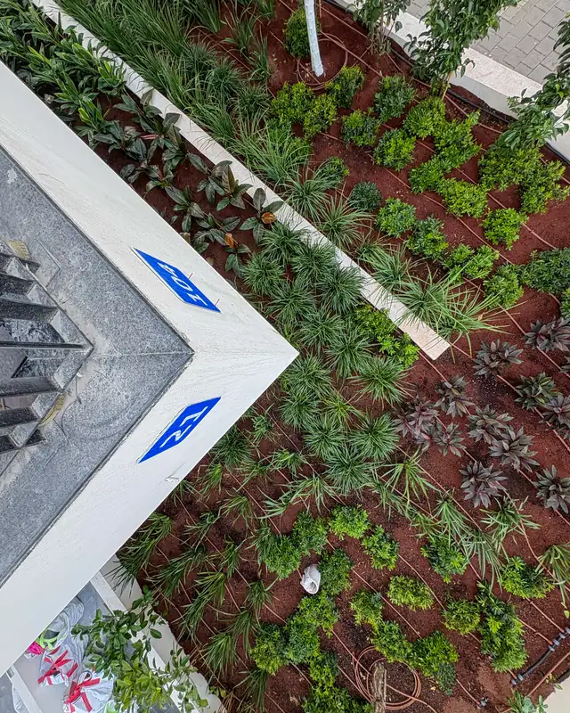
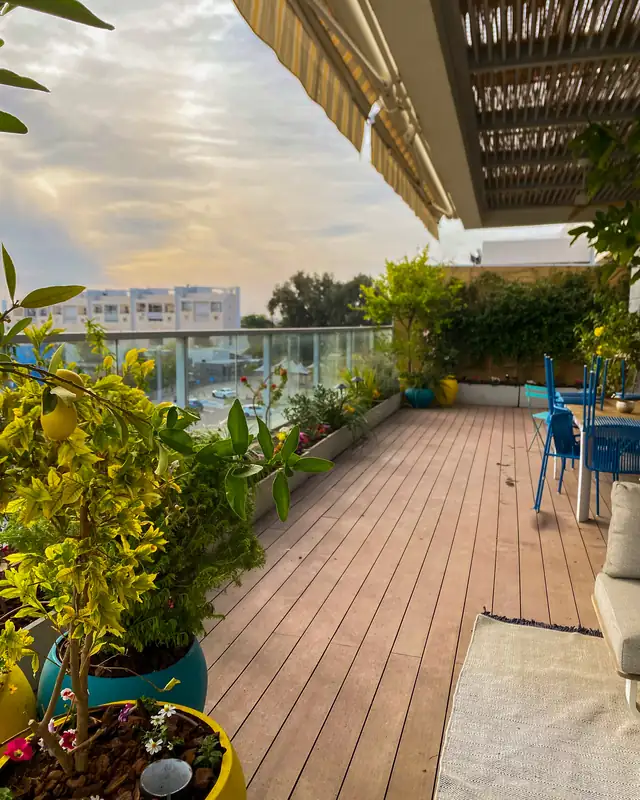
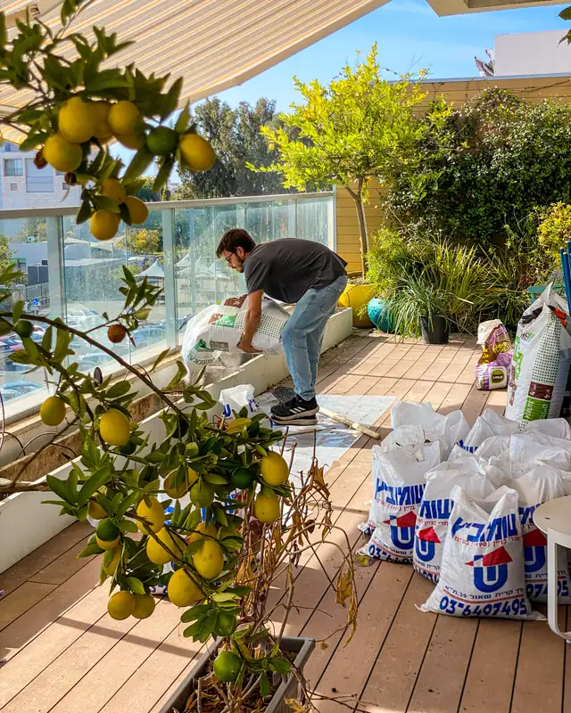
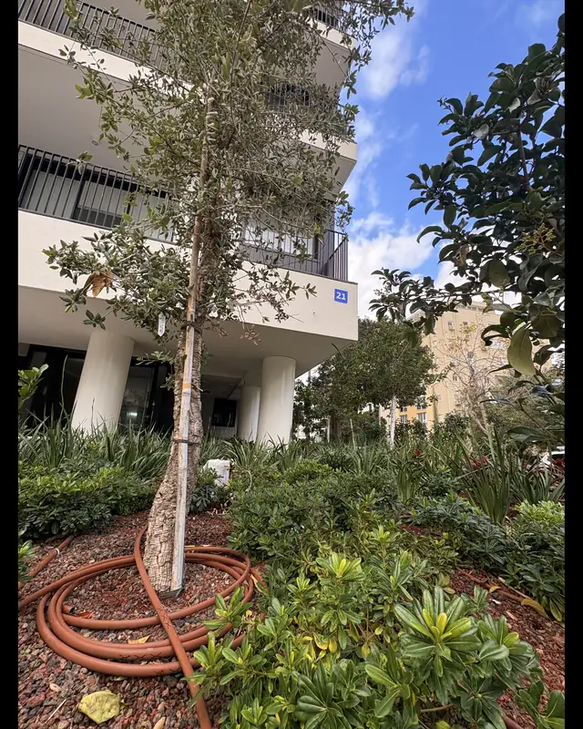
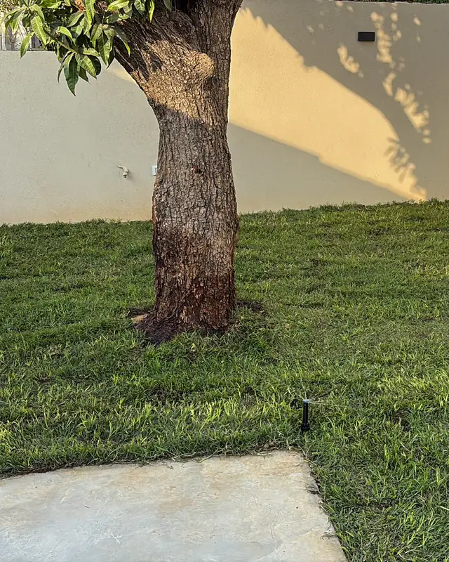

עפר, תשתית, שתילה וגימור, בסדר הנכון ובידי מי שתכנן. מהיום הראשון בשטח ועד שאתם מקבלים גינה שעובדת.
לשיחת אפיון ב-WhatsAppללא התחייבות · עונים בהקדם
בשטח, שלב אחרי שלב
הסדר לא מקרי: מה שנקבר באדמה נסגר לפני מה שרואים, ומה שבונים נבנה לפני שהצמחים נכנסים.

מסמנים לפי התכנית, מגינים על מה שנשאר: עצים קיימים, ריצוף וקירות. את מה שיוצא מפנים.

מיישרים את הקרקע, קובעים שיפועים כך שהמים יזרמו הרחק מהבית, ומוסיפים אדמת גן איפה שצריך. בסוף לא רואים את זה, אבל בזכותו הגינה מחזיקה.

צנרת השקיה, מחשב השקיה וקווי חשמל לתאורה נכנסים לפני הצמחים. בודקים אותם כשהם עוד גלויים, כי אחר כך כבר מאוחר.

דק, ריצוף, פרגולה ואדניות. מה שמגדיר את החלל נבנה לפני הצמחייה, כדי שאף אחד לא יעבוד מעליה.

ממלאים אדניות וערוגות במצע שמתאים לצמח ולמקום, ושותלים: קודם העצים, אחר כך השיחים והמילוי.

מחפים את הערוגות כדי לשמור על לחות, מכוונים את התאורה, מסדרים את השלוחות ומנקים את השטח.

מכיילים את ההשקיה לעונה, עוברים איתכם על הגינה ומסבירים מה היא צריכה. משם אפשר להמשיך איתנו לתחזוקה חודשית.
אותו תהליך, קצב אחר. כמה זמן זה לוקח בשטח, ומה מיוחד בכל אחת
שבוע עד שלושה בשטח. מתחילים מעפר, ניקוז והשקיה
ברוב המרפסות יום אחד. בבוקר מרפסת ריקה, בערב גינה
שבוע עד שלושה, כולל תיאום מול ועד הבית
יום עד יומיים, לפני הפתיחה או אחרי הסגירה
בבוקר מוקדם, בערב או בסוף שבוע, כדי לא להפריע לעובדים
לפני העבודה בשטח יש תכנון ורכש: שבועיים עד ארבעה, לפי ההיקף.
התכנית לא עוברת מיד ליד. מי ששרטט אותה נמצא באתר כשהיא קמה
חשמלאי, נגר או רצף עובדים לפי אותה תכנית, ואנחנו מתאמים ביניהם
השקיה, ניקוז וחשמל נבדקים כשהם עוד פתוחים
עצים ושיחים נבחרים לפי התכנית ולפי תנאי המקום
מגינים על מה שנשאר, ומשאירים את השטח נקי
עוקבים אחרי הצמחייה ומחליפים מה שלא נקלט
בואו נדבר
שלחו תמונה של השטח כמו שהוא עכשיו, ונחזור אליכם עם כיוון ראשוני לשיחה
לשיחת אפיון ב-WhatsAppעונים בהקדם · בלי התחייבות · או מלאו שאלון אפיון קצר ←